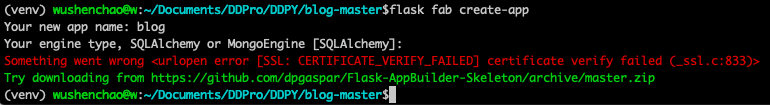
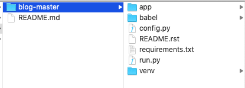
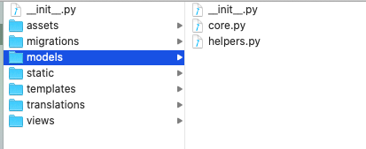
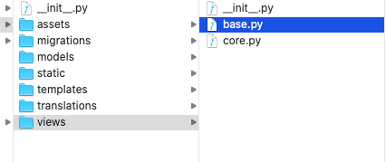

背景
研究了开源项目 superset 已经有一段时间了，突然想自己搭建一个类似的 Python + React 类型的项目，搭建的过程中产生了各种问题，这篇文章记录了搭建的整个过程以及遇到的问题和相关解决方法。
基本环境
系统环境: macOS系统
使用python等版本如下
1 | node -v: v11.1.0 |
虚拟环境和相关安装包配置
进入项目目录创建 requirements.txt 文件，配置相关依赖包（见文末）
创建虚拟环境(python3直接创建)并激活环境:
1 | python3 -m venv venv |
使用如下命令安装相关依赖包
1 | pip3 install -r requirements.txt |
创建项目
本项目以 Flask-AppBuilder 为基础搭建，相关文档和地址:
GitHub 地址 文档地址
按照文档使用如下命令创建项目
1 | flask fab create-app |

我们看到安装出现了错误，我从 Flask-AppBuilder 2.1.10 升级到 2.1.13 还是有这个错，搜了下issues 发现已经有这个问题，并且这个问题已经被修复，最新版本应该是还没有发布。我们直接复制地址到浏览器下载: https://github.com/dpgaspar/Flask-AppBuilder-Skeleton/archive/master.zip 把下载压缩包解压，移动文件中的内容到项目文件目录下。如下所示

相关目录创建和文件配置
- 删除 views.py 和 models.py
新增目录 staic、assets、views、models
1
2
3
4
5
6
71. 软连接 assets 到 static 目录下(使用绝对路径)
ln -s /Users/xx/app/assets /Users/xx/app/static/assets
2. models 文件目录是相关模型
3. views 文件目录是相关视图
4. templates 文件目录是相关模版文件(见React部分)
5. assets 文件目录是react相关配置(见React部分)调整后的目录结构如下所示:

配置 config.py 文件
1
2
3
4数据库地址配置: SQLALCHEMY_DATABASE_URI
并新增 SQLALCHEMY_TRACK_MODIFICATIONS = False 配置项
应用名称配置: APP_NAME
应用icon配置: APP_ICONmodels 模块配置
为了方便 model 统一管理我们创建了 models，该文件下主要存放各种模型文件和模型辅助文件，结构目录如下所示:

1、\_\_init\_\_.py 文件内容为:
from . import core
2、core.py 我们定义的一个log模型
1
2
3
4
5
6
7
8
9
10
11
12
13
14
15
16
17
18
19
20
21
22
23
24
25
26
27
28
29
30
31
32
33
34
35
from datetime import datetime
import functools
import json
from flask import request, g
from sqlalchemy import (
Boolean, Column, DateTime, ForeignKey, Integer, String, Text,
)
from flask_appbuilder import Model
class Log(Model):
"""ORM object used to log Superset actions to the database"""
__tablename__ = 'logs'
id = Column(Integer, primary_key=True)
action = Column(String(512))
blog_id = Column(Integer)
json = Column(Text)
timestamp = Column(DateTime, default=datetime.utcnow)
duration_ms = Column(Integer)
referrer = Column(String(1024))
user_id = Column(Integer, ForeignKey('ab_user.id'))
def __repr__(self):
return self.user_id if self.user_id else self.action
@classmethod
def log_this(cls, f):
"""Decorator to log user actions"""
@functools.wraps(f)
def wrapper(*args, **kwargs):
"""自定义记录内容"""
return wrapper
views 模块配置
同理为了方便视图的统一管理我们创建了 views，结构目录如下所示:

1、__init__.py 文件内容同model模块
2、base.py 定义继承于 BaseView 的公共基类和获取用户的基本信息
1
2
3
4
5
6
7
8
9
10
11
12
13
14
15
16
17
18
19
20
21
22
23
24
25
26
27
28
29
30
31
32
33
34
35
36
37
38
39
40
41
42
43
44
45
46
47
48
49
50
51
52
53
54
55
56
57
58
59
60
61
62
63
64
65
66
67
68
69
70
71
72
73
74
75
76
77
78from flask import Response, get_flashed_messages, g
from flask_appbuilder import BaseView
import simplejson as json
from flask_appbuilder.security.sqla import models as ab_models
from app import db
def bootstrap_user_data(username=None, include_perms=False):
"""获取用户信息"""
if username:
username = username
else:
username = g.user.username
user = db.session.query(ab_models.User).filter_by(username=username).one()
payload = {
'username': user.username,
'firstName': user.first_name,
'lastName': user.last_name,
'userId': user.id,
'isActive': user.is_active,
'email': user.email,
'createdOn': user.created_on.isoformat()
}
if include_perms:
""""""
return payload
class BaseDDBlogView(BaseView):
def json_response(self, obj, status=200):
return Response(
json.dumps(obj, ignore_nan=True),
status=status,
mimetype='application/json'
)
def common_bootstrap_payload(self):
"""common bootstrap"""
messages = get_flashed_messages(with_categories=True)
return {
'flash_messages': messages
}
3、core.py
from flask import (
Response, request, url_for, redirect, render_template, flash, g
)
from flask_appbuilder import expose
import simplejson as json
from .base import (
BaseDDBlogView, bootstrap_user_data
)
from app import (app, appbuilder, db)
class DDBlog(BaseDDBlogView):
""""""
@expose('/welcome')
def welcome(self):
if not g.user or not g.user.get_id():
return redirect(appbuilder.get_url_for_login)
payload = {
'common': self.common_bootstrap_payload(),
'user': bootstrap_user_data()
}
return self.render_template(
'blog/basic.html',
entry='welcome',
bootstrap_data=json.dumps(payload)
)
appbuilder.add_view_no_menu(DDBlog)
* 修改 run.py 文件from app import db, app
from app.models.core import Log
@app.shell_context_processor
def make_shell_context():
"""
此处引入model中已经创建好的Log模型，用于migrate创建是自动加载
"""
return dict(app=app, db=db, Log=Log)
if __name__ == "__main__":
app.run(host="0.0.0.0", port=8080, debug=True)
1
2
3
4
5
6
7
8
9
10
11
12
13
14
15
16
17
18
19
20
21
22
23
24
25
26
27
28
29
30
31
32
33
34
35
36
37
38
39
40
41
42
43
44
45
46
47
48
49
50
51
52
53
54
55
56
57
58
59
60
61
62
63
64
65
66
67
68
69
70
71
72
73
74
75
76
77
78
79
80
81
82
83
84
85
86
87
88
89
90
91
92
93
94
95
96
97
98
99
100
101
102
103
* 配置 app/\_\_init\_\_.py 文件
1、新增 migrate 配置
APP_DIR = os.path.dirname(__file__)
migrate = Migrate(app, db, directory=APP_DIR + "/migrations")
2、继承并重定向 IndexView
class MyIndexView(IndexView):
@expose("/")
def index(self):
return redirect("/ddblog/welcome")
with app.app_context():
appbuilder = AppBuilder(
app,
db.session,
base_template="blog/base.html",
indexview=MyIndexView,
)
3、配置启动处理 assets 模块 manifest
"""Handling manifest file logic at app start"""
MANIFEST_FILE = APP_DIR + "/static/assets/dist/manifest.json"
manifest = {}
def parse_manifest_json():
global manifest
try:
with open(MANIFEST_FILE, "r") as f:
full_manifest = json.load(f)
manifest = full_manifest.get("entrypoints", {})
except Exception as e:
print(str(e))
pass
def get_js_manifest_files(filename):
if app.debug:
parse_manifest_json()
entry_files = manifest.get(filename, {})
return entry_files.get("js", [])
def get_css_manifest_files(filename):
if app.debug:
parse_manifest_json()
entry_files = manifest.get(filename, {})
return entry_files.get("css", [])
def get_unloaded_chunks(files, loaded_chunks):
filtered_files = [f for f in files if f not in loaded_chunks]
for f in filtered_files:
loaded_chunks.add(f)
return filtered_files
parse_manifest_json()
@app.context_processor
def get_manifest():
return dict(
loaded_chunks=set(),
get_unloaded_chunks=get_unloaded_chunks,
js_manifest=get_js_manifest_files,
css_manifest=get_css_manifest_files,
)
* 以上配置完成后创建并初始化数据库
1、 进入到到当前项目，启动虚拟环境，执行如下命令:
export FLASK_APP=run.py
flask db init
如下图所示:

2、 执行下面命令生成数据库版本并更新
flask db migrate
flask db upgrade
到这里数据库已经完成创建
* 创建管理员账号 flask fab create-admin 如下图

如果以上都能执行完成，Python 模块基本配置完成，这里总结上面出现的几种常见错误
- 项目的目录结构层级错误
- 目录 app 名称被修改，执行命令会出现找不到 app 等错误
- run.py 文件中需要配置一个自己定义的模型如 Log，模型才能被初始化合并到项目中
1
2
3
4
5
6
7
8
9
10
11
12
13
14
15
16
17
18
19
20
21
22
23
24
25
26
27
28
29
30
31
32
33
34
35
36
37
38
39
40
41
42
43
44
45
46
47
48
49
50
51
52
53
54
55
56
57
58
59
60
61
62
63
64
65
66
67
68
69
70
71
72
73
74
75
76
77
78
79
80
81
82
83
84
85
86
87
88
89
90
91
92
93
94
95
96
97
98
99
100
101
102
103
104
105
106
107
108
### React 配置
此模块主要记录了项目中 webpack 配置过程中所产生的各种问题和相关解决方法。 该模块主要包含 templates 和 assets 两部分配置，assets 部分配置是重点。
### templates 模块配置
该模块主要参考 superset 内容，里面有两个文件，一个 appbuilder， 一个是自定义的模块bog，该文件名称和文章前面 \_\_init\_\_.py 中 apppbuilder 中 base_template 配置相同。
### assets 模块配置（容易出错的地方）
**以下操作在文件目录 assets 下执行**
#### 生成 package.json 文件
第一次进入assets目录下改文件夹内容是空的我们按照下面过程操作
1. 执行 npm init 命令 一直回车生成 package.json 文件
2. 编辑 package.json 文件内容，这时文件目录如下所示
3. 执行 npm install 安装 node_modules 模块
以上执行完成后该文件夹内容如下所示

#### assets目录下新增 src、images 和 stylesheets目录
* src 目录中主要存放 react 编写的 js 文件，这里我把superset中 welcome 模块修改了部分内容后直接使用
* stylesheets 存放的是项目中需要使用的 css less样式，这里我也套用 superset 模块内容
* images 存放是项目中使用的图片
#### 创建并配置 webpack.config.js
webpack 各个参数配置和说明可以参考[中文文档](https://www.webpackjs.com/concepts/)
在我们创建并配置好 webpack.config.js 后，当前文件目录如下所示

1、 以上配置完成后我尝试的运行了下打包命令 npm run dev，第一个错误出现

该错误提示比较明显，提示我们缺少一个 tsconfig 文件，因此我们新增加了一个 tsconfig.config 文件内容参考 superset 配置，修改后的文件目录如下所示

2、 我又尝试的运行了下打包命令 npm run dev ，第二个错误出现

从错误里面看到好像和 babel-core 有关，于是我找到下面这篇[文章](https://www.cnblogs.com/soyxiaobi/p/9554565.html), 从该文章我知道 babel、babel-loader 版本需要和 webpack 对应，于是我将这三个模块都回退到了7执行以下命令
npm install -D babel-loader@7 babel-core babel-preset-env webpack
3、我又尝试的运行了下打包命令 npm run dev ，第三个错误出现

这次错误倒是少了提示 babel-loader 失败，从字面理解应该是 babel 模块加载失败，但是从这里很难找到问题，于是我又查找了一通，终于从发下了下面这篇文章 [webpack配置 babel](https://segmentfault.com/a/1190000016458913)，从这篇文章我突然发现我少了一个 .babelrc 文件，于是我又查看了 superset 果然有这个文件，于是我又参考了它配置了一个如下
{
"presets": ["react", "env", "airbnb"],
"plugins": ["lodash", "syntax-dynamic-import", "react-hot-loader/babel"],
"env": {
"test": {
"plugins": [
"babel-plugin-dynamic-import-node"
]
}
}
}
4、我又尝试的运行了下打包命令 npm run dev ，第四个错误出现

这个错误还是比较明显的提示我们 aribnb 没有找到，回到package.json 中发现我配置的是 babel-preset-airbnb，修改presets内容后再次运行

终于在经过上面n多次修改后，我的项目终于编译成功！附上该模块最终目录截图

### 小结
事后我又直接找到 [babel 中文网](https://www.babeljs.cn/docs/)，发现原来Babel 是一个工具链主要用于语法转换的，它的核心库包含 babel-core、babel-cli、babel-preset-env和babel-polyfill等，关于他的一些配置事项该网站中都有介绍，如果我早查看该文章可能会少走些弯路。总的来说过程是痛苦的但是结果是好的
**以上内容参考以下文章**
[webpack配置 babel](https://segmentfault.com/a/1190000016458913)
[webpack.config.js配置遇到Error: Cannot find module '@babel/core'&&Cannot find module '@babel/plugin-transform-react-jsx' 问题](https://www.cnblogs.com/soyxiaobi/p/9554565.html)
webpack.config.js 文件内容:
const path = require(‘path’);
const webpack = require(‘webpack’);
const BundleAnalyzerPlugin = require(‘webpack-bundle-analyzer’).BundleAnalyzerPlugin;
const CleanWebpackPlugin = require(‘clean-webpack-plugin’);
const MiniCssExtractPlugin = require(‘mini-css-extract-plugin’);
const OptimizeCSSAssetsPlugin = require(‘optimize-css-assets-webpack-plugin’);
const SpeedMeasurePlugin = require(‘speed-measure-webpack-plugin’);
const TerserPlugin = require(‘terser-webpack-plugin’);
const WebpackAssetsManifest = require(‘webpack-assets-manifest’);
const ForkTsCheckerWebpackPlugin = require(‘fork-ts-checker-webpack-plugin’);
// Parse command-line arguments
const parsedArgs = require(‘minimist’)(process.argv.slice(2));
// input dir
const APP_DIR = path.resolve(__dirname, ‘./‘);
// output dir
const BUILD_DIR = path.resolve(__dirname, ‘./dist’);
const {
mode = ‘development’,
devPort = 9000,
proPort = 8088,
measure = false,
analyzeBundle = false,
} = parsedArgs;
const isDevMode = mode !== ‘production’;
const plugins = [
// creates a manifest.json mapping of name to hashed output used in template files
new WebpackAssetsManifest({
publicPath: true,
entrypoints: true,
writeToDisk: isDevMode,
}),
// create fresh dist/ upon build
new CleanWebpackPlugin([‘dist’]),
// expose mode variable to other modules
new webpack.DefinePlugin({
‘process.env.WEBPACK_MODE’: JSON.stringify(mode),
}),
// runs type checking on a separate process to speed up the build
new ForkTsCheckerWebpackPlugin({
checkSyntacticErrors: true,
}),
];
if (isDevMode) {
// Enable hot module replacement
plugins.push(new webpack.HotModuleReplacementPlugin());
} else {
// text loading (webpack 4+)
plugins.push(new MiniCssExtractPlugin({
filename: ‘[name].[chunkhash].entry.css’,
chunkFilename: ‘[name].[chunkhash].chunk.css’,
}));
plugins.push(new OptimizeCSSAssetsPlugin());
}
const output = {
path: BUILD_DIR,
publicPath: ‘/static/assets/dist/‘, // necessary for lazy-loaded chunks
};
if (isDevMode) {
output.filename = ‘[name].[hash:8].entry.js’;
output.chunkFilename = ‘[name].[hash:8].chunk.js’;
} else {
output.filename = ‘[name].[chunkhash].entry.js’;
output.chunkFilename = ‘[name].[chunkhash].chunk.js’;
}
const PREAMBLE = [
‘babel-polyfill’,
path.join(APP_DIR, ‘/src/preamble.js’),
];
function addPreamble(entry) {
return PREAMBLE.concat([path.join(APP_DIR, entry)]);
}
const config = {
node: {
fs: ‘empty’,
},
entry: {
theme: path.join(APP_DIR, ‘/src/theme.js’),
preamble: PREAMBLE,
welcome: addPreamble(‘/src/welcome/index.jsx’),
},
output,
optimization: {
splitChunks: {
chunks: ‘all’,
automaticNameDelimiter: ‘-‘,
minChunks: 2,
cacheGroups: {
default: false,
major: {
name: ‘vendors-major’,
test: /[\/]node_modules\/(brace|react[-]dom|core[-]js)[\/]/,
}
}
}
},
resolve: {
alias: {
src: path.resolve(APP_DIR, ‘./src’),
},
extensions: [‘.ts’, ‘.tsx’, ‘.js’, ‘.jsx’],
},
context: APP_DIR, // to automatically find tsconfig.json
module: {
rules: [
{
test: /.jsx?$/,
exclude: /node_modules/,
include: APP_DIR,
loader: ‘babel-loader’,
},
{
test: /.css$/,
include: APP_DIR,
use: [
isDevMode ? ‘style-loader’ : MiniCssExtractPlugin.loader,
‘css-loader’,
],
},
{
test: /.less$/,
include: APP_DIR,
use: [
isDevMode ? ‘style-loader’ : MiniCssExtractPlugin.loader,
‘css-loader’,
‘less-loader’,
],
},
/ for css linking images /
{
test: /.png$/,
loader: ‘url-loader’,
options: {
limit: 10000,
name: ‘[name].[hash:8].[ext]’,
},
},
{
test: /.(jpg|gif)$/,
loader: ‘file-loader’,
options: {
name: ‘[name].[hash:8].[ext]’,
},
},
/ for font-awesome /
{
test: /.woff(2)?(\?v=[0-9].[0-9].[0-9])?$/,
loader: ‘url-loader?limit=10000&mimetype=application/font-woff’,
},
{
test: /.(ttf|eot|svg)(\?v=[0-9].[0-9].[0-9])?$/,
loader: ‘file-loader’,
},
],
},
externals: {
cheerio: ‘window’,
‘react/lib/ExecutionEnvironment’: true,
‘react/lib/ReactContext’: true,
},
plugins,
devtool: isDevMode ? ‘cheap-module-eval-source-map’ : false,
devServer: {
historyApiFallback: true,
hot: true,
index: ‘’, // This line is needed to enable root proxying
inline: true,
stats: { colors: true },
overlay: true,
port: devPort,
// Only serves bundled files from webpack-dev-server
// and proxy everything else to backend
proxy: {
context: () => true,
‘/‘: http://localhost:${proPort},
target: http://localhost:${proPort},
},
contentBase: path.join(process.cwd(), ‘../static/assets/dist’),
},
};
if (!isDevMode) {
config.optimization.minimizer = [
new TerserPlugin({
cache: ‘.terser-plugin-cache/‘,
parallel: true,
extractComments: true,
}),
];
}
// Bundle analyzer is disabled by default
// Pass flag –analyzeBundle=true to enable
// e.g. npm run build – –analyzeBundle=true
if (analyzeBundle) {
config.plugins.push(new BundleAnalyzerPlugin());
}
// Speed measurement is disabled by default
// Pass flag –measure=true to enable
// e.g. npm run build – –measure=true
const smp = new SpeedMeasurePlugin({
disable: !measure,
});
module.exports = smp.wrap(config);1
2
3
package.json 文件内容:
{
“name”: “ddblog”,
“version”: “1.0.0”,
“description”: “”,
“main”: “index.js”,
“scripts”: {
“dev”: “webpack –mode=development –colors –progress –debug –watch”,
“dev-server”: “webpack-dev-server –mode=development –progress”,
“build”: “NODE_ENV=production webpack –mode=production –colors –progress”
},
“keywords”: [
“blog”,
“python”,
“react”
],
“author”: “wushenchao”,
“license”: “MIT”,
“dependencies”: {
“abortcontroller-polyfill”: “^1.1.9”,
“bootstrap”: “^3.3.6”,
“bootstrap-slider”: “^10.0.0”,
“jquery”: “3.4.1”,
“lodash”: “^4.17.11”,
“moment”: “^2.20.1”,
“prop-types”: “^15.6.0”,
“postcss”: “6.0.20”,
“react”: “^16.4.1”,
“react-ace”: “^5.10.0”,
“react-addons-shallow-compare”: “^15.4.2”,
“react-bootstrap”: “^0.31.5”,
“react-bootstrap-slider”: “2.1.5”,
“react-bootstrap-table”: “^4.3.1”,
“react-hot-loader”: “^4.3.6”,
“react-dom”: “^16.4.1”,
“react-redux”: “^5.0.2”,
“reactable”: “1.0.2”,
“redux”: “^3.5.2”,
“redux-localstorage”: “^0.4.1”,
“redux-thunk”: “^2.1.0”,
“redux-undo”: “^1.0.0-beta9-9-7”,
“shortid”: “^2.2.6”
},
“devDependencies”: {
“babel-cli”: “^6.26.0”,
“babel-core”: “^6.10.4”,
“babel-eslint”: “^8.2.2”,
“babel-jest”: “^25.0.0”,
“babel-loader”: “^7.1.4”,
“babel-plugin-css-modules-transform”: “^1.1.0”,
“babel-plugin-dynamic-import-node”: “^1.2.0”,
“babel-plugin-lodash”: “^3.3.4”,
“babel-plugin-syntax-dynamic-import”: “^6.18.0”,
“babel-polyfill”: “^6.23.0”,
“babel-preset-airbnb”: “^2.1.1”,
“babel-preset-env”: “^1.7.0”,
“cache-loader”: “^1.2.2”,
“clean-webpack-plugin”: “^0.1.19”,
“css-loader”: “^1.0.0”,
“enzyme”: “^3.3.0”,
“enzyme-adapter-react-16”: “^1.1.1”,
“exports-loader”: “^0.7.0”,
“fetch-mock”: “^7.0.0-alpha.6”,
“file-loader”: “^1.1.11”,
“fork-ts-checker-webpack-plugin”: “^1.5.0”,
“ignore-styles”: “^5.0.1”,
“imports-loader”: “^0.7.1”,
“less”: “^3.10.0”,
“less-loader”: “^4.1.0”,
“mini-css-extract-plugin”: “^0.4.0”,
“minimist”: “^1.2.0”,
“optimize-css-assets-webpack-plugin”: “^5.0.1”,
“speed-measure-webpack-plugin”: “^1.2.3”,
“style-loader”: “^0.21.0”,
“transform-loader”: “^0.2.3”,
“ts-loader”: “^5.2.0”,
“typescript”: “^3.1.3”,
“url-loader”: “^1.0.1”,
“webpack”: “^4.19.0”,
“webpack-assets-manifest”: “^3.0.1”,
“webpack-bundle-analyzer”: “^3.0.2”,
“webpack-cli”: “^3.1.1”,
“webpack-dev-server”: “^3.1.7”,
“webpack-sources”: “^1.1.0”
}
}
1 |
|
Babel==2.6.0
bleach==3.0.2
celery==4.2.0
fake-useragent==0.1.11
Flask==1.1.0
Flask-AppBuilder==2.1.13
Flask-Babel==0.11.1
Flask-Caching==1.4.0
Flask-Compress==1.4.0
Flask-Login==0.4.1
Flask-Migrate==2.5.0
Flask-Moment==0.9.0
Flask-OpenID==1.2.5
Flask-Script==2.0.6
Flask-SQLAlchemy==2.4.0
Flask-WTF==0.14.2
flower==0.9.2
future==0.16.0
numpy==1.15.2
pandas==0.23.4
requests==2.21.0
selenium==3.141.0
simplejson==3.15.0
six==1.11.0
SQLAlchemy==1.2.2
SQLAlchemy-Utils==0.32.21`